Twin Peaks · Retro 2D · R75
Gauntlet visivo
R75 · Cooper generato, ora giocabile
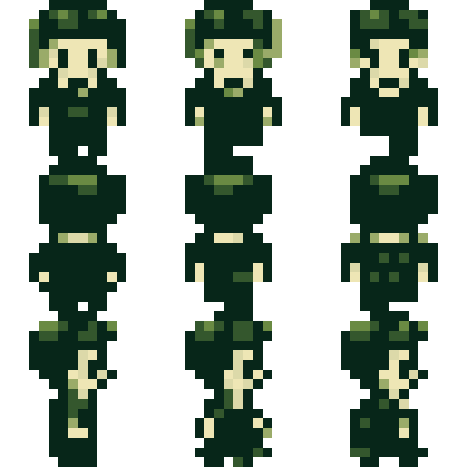
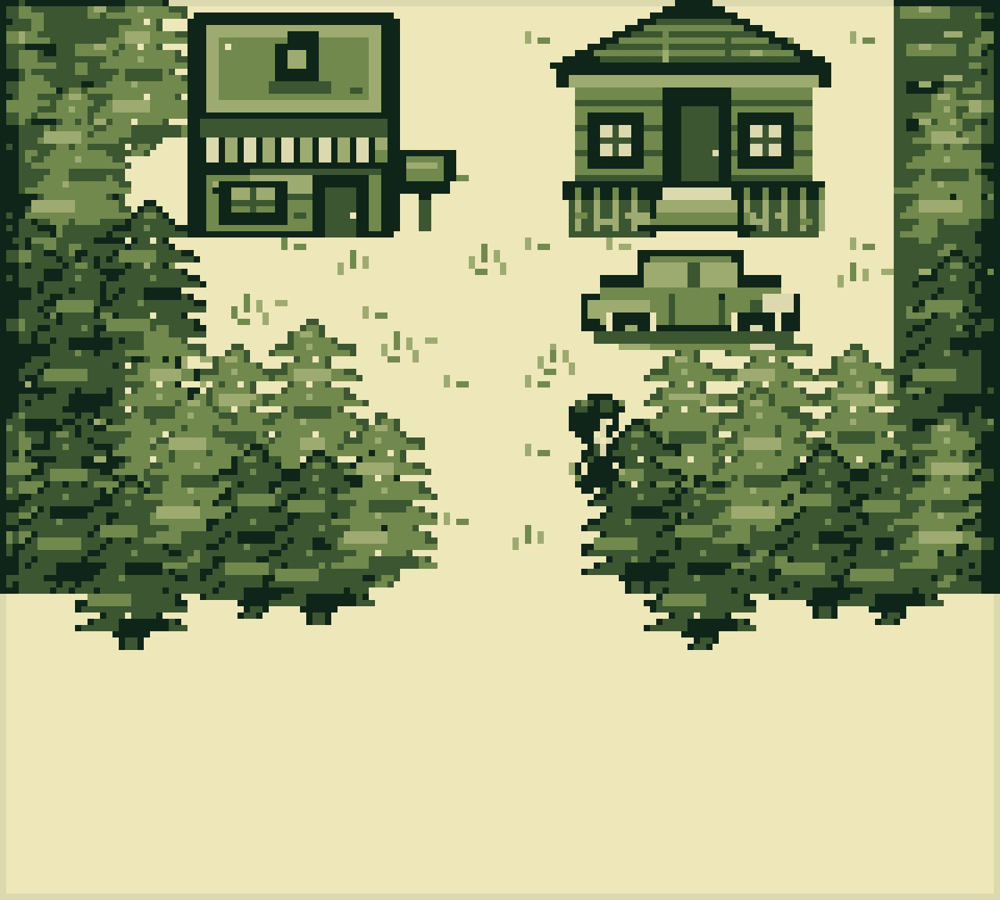
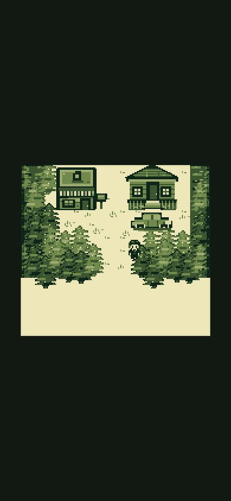
Master R2 con giacca FBI, camicia e cravatta → nove celle 16×16 → sei toni + trasparenza. Destra e sinistra condividono il profilo tramite specchio. Se PNG non è pronto, renderer precedente resta fallback: nessun frame vuoto.
R74 · Dialoghi con respiro e righe bilanciate
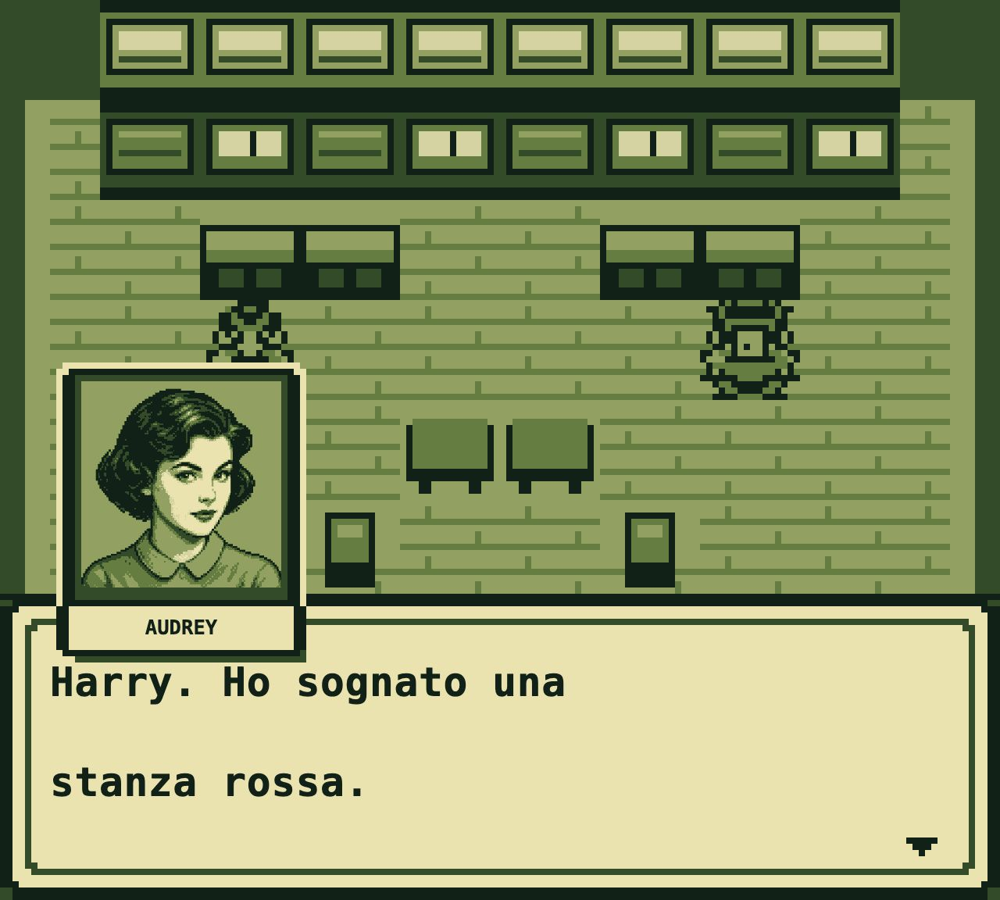
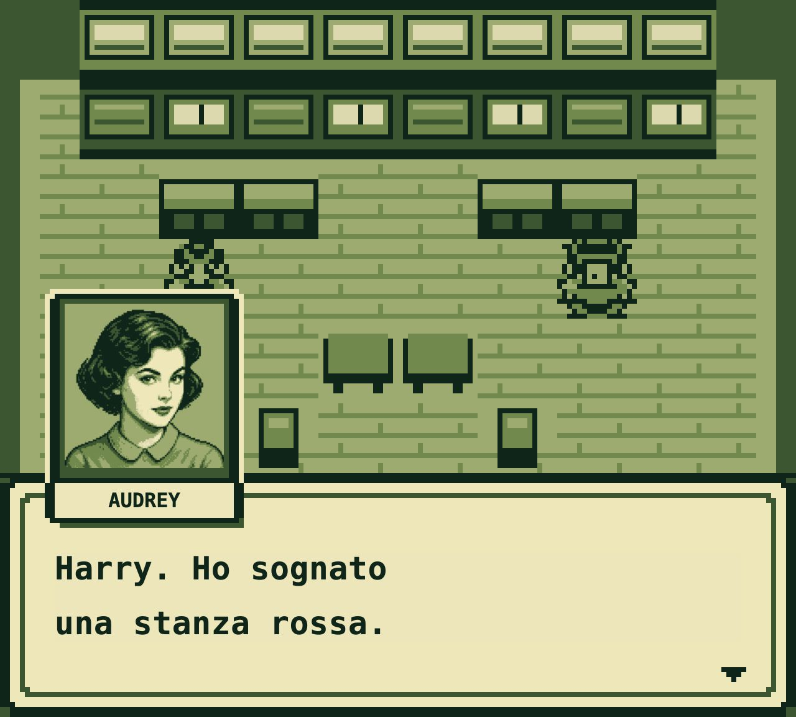
1.480 elementi misurati, zero overflow
La battuta parte sulla stessa griglia della targhetta. Interlinea ridotta da 16 a 11 px nativi; parole e punteggiatura restano intatte. Verifica desktop 8× e mobile 2×.
R73 · Testo dialoghi ad alta risoluzione
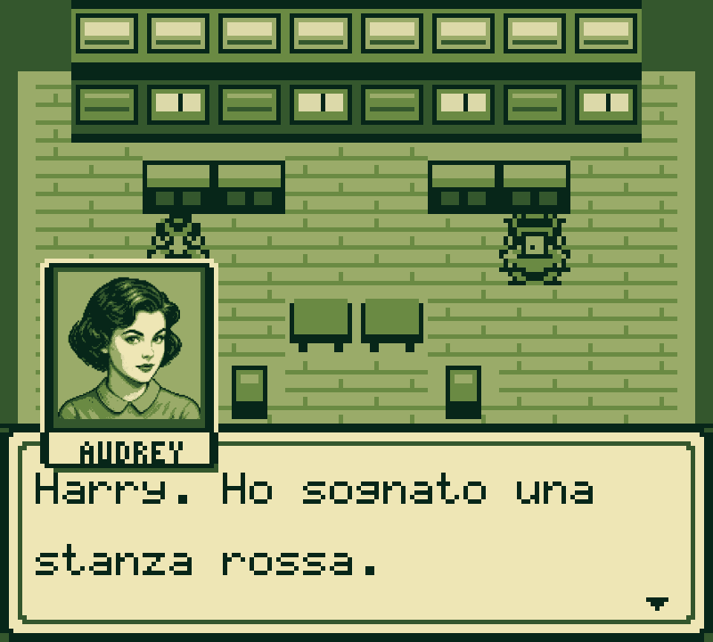
762 elementi misurati, zero overflow
Stesso wrapping a due righe. Cornice, freccia, ritratto e mondo restano invariati. Canvas bitmap rimane fallback; scala tipografica segue fattore nativo intero su desktop e mobile.
R72 · Cast parlante completo
25/25 ritratti ad alta risoluzione
Ogni identità risolta dal motore dispone ora di asset 256×264, sei toni massimi e fallback canvas. Apri confronto completo: stato precedente a sinistra, nuovo ritratto a destra →
R71 · Ritratto Cooper su desktop
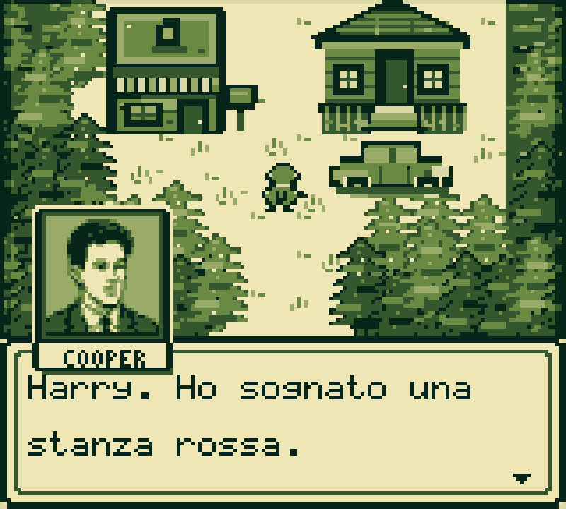
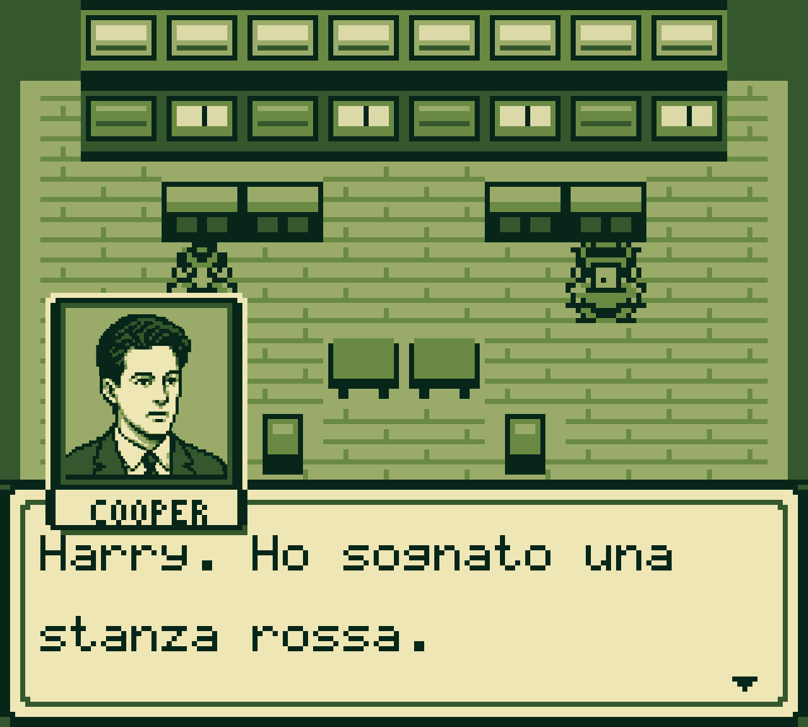
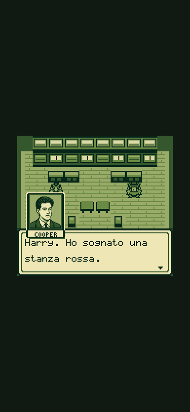
Mondo, box, cornice e nome restano nel framebuffer Game Boy 160×144. Solo interno del ritratto usa asset indicizzato ad alta risoluzione. Dettaglio preservato su desktop; posizione e proporzioni restano stabili su mobile.
Confronto usato dai critici
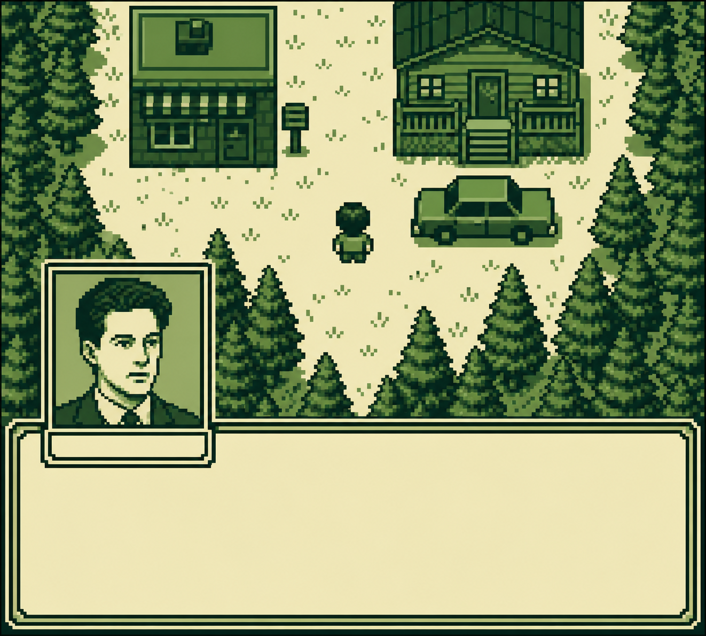
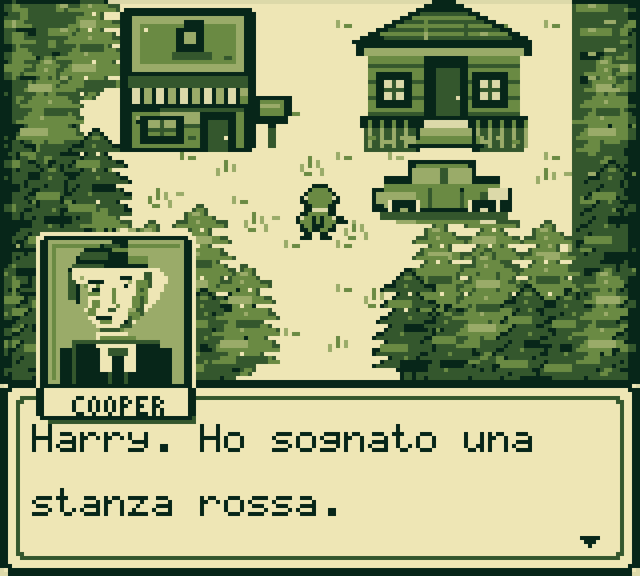
Andamento review cieca
integratoUI/mobileworld art
Gate automatici correnti
23/23reference
48/48production
19/19mobile
13/13touch
366smoke
86walkthrough
9/9portrait
9/9palette
Metodo
Build reale e cattura lossless.
Critici ricevono reference e frame, senza difesa autore.
Un gap osservabile per giro; correzione mirata.
Suite completa prima del deploy.